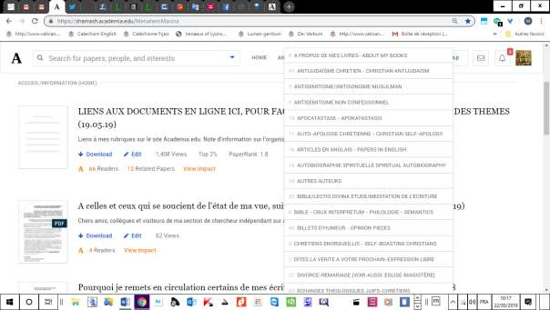
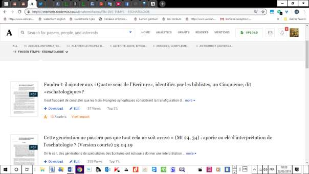

Tout internaute sait, par expérience, combien il est difficile d’accéder à l’information qui l’intéresse, surtout quand il a du mal à la décrire dans un moteur de recherche.
La difficulté est plus grande encore quand le nombre des publications de l’auteur dont on examine le compte, est important. Ce qui est précisément le cas du mien ici: 863 textes en ligne au 22 mai 2019, et 975 au 10 mars 2020.
Autre difficulté majeure pour l’internaute: comment trouver les titres dont le contenu correspond à ses centres d’intérêt?
Les lignes qui suivent se proposent d’aider celles et ceux qui suivent mes publications sur Academia.edu à s’y retrouver, et donc, comme on dit dans le jargon du Net, à circuler dans l’information.
J’ai équipé ma plateforme de menus déroulants, dont les onglets indiquent le contenu (voir Fig. 1):
Fig. 1

Exemple de contenu d’un onglet (FIN DES TEMPS/ESCHATOLOGIE) (voir Fig. 2)
Fig. 2

Observation importante: CHAQUE TITRE EST UN LIEN HYPERTEXTE (hyperlien) Exemple, dans l’onglet intitulé FIN DES TEMPS – ESCHATOLOGIE (Fig. 2 ci-dessus):
Il suffit de le cliquer avec la souris pour atteindre le texte correspondant. INTITULES DES MENUS - liste par ordre alphabétique (chaque titre est cliquable et mène à la rubrique correspondant à son nom et aux articles qu’elle contient):
ALL ACCUEIL/INFORMATION (HOME) ANTIJUDAÏSME CHRETIEN - CHRISTIAN ANTIJUDAISM ARTICLES DIVERS APOCATASTASE - APOKATASTASIS AUTRES AUTEURS BIBLE/LECTIO DIVINA THEOLOGIE BIBLIQUE EXEGESE DIVORCE-REMARIAGE (VOIR AUSSI: EGLISE-MAGISTÈRE) ECHANGES THEOLOGIQUES JUIFS-CHRETIENS EGLISE-MAGISTERE (VOIR AUSSI: DIVORCE-REMARIAGE) EGLISE-PEUPLE JUIF ET DESSEIN DIVIN (SUBSTITUTION) EGLISE - SCANDALES FIN DES TEMPS - ESCHATOLOGIE FOI D'ABRAHAM - FAITH OF ABRAHAM HAINE D'ISRAEL ET/OU DES JUIFS ISRAËL TERRE/ETAT CONFLIT PALESTINIEN ANTISIONISM ITINERAIRE SPIRITUEL PERSONNEL (M. R. MACINA) JERUSALEM JUDAÏSME-CHRISTIANISME = REFLEXIONS THEOLOGIQUES LIVRES DE M. R. MACINA MENAHEM MACINA (DIVERS - MISCELLANEOUS) MESSIANIQUE (JUDAÏSME) - MESSIANIC JUDAISM MYSTERE DU PEUPLE JUIF - JEWISH PEOPLE'S MYSTERY PIE XII - PIUS XII ROYAUME/TEMPS MESSIANIQUES/ MESSIANIC KINGDOM SHOAH SIONISME - BIBLE -CHRETIENS (CONTENTIEUX) SUBSTITUTION (CF. EGLISE/JUDAISME CONTENTIEUX) SYRIACA - RABBINICA
(A suivre éventuellement)
Note créée et mise en ligne sur Academia.edu, le 27 janvier 2018 (mise à jour le 10 mars 2020).
Merci de me signaler les liens défectueux et autres dysfonctionnements, par mail à maheqra@gmail.com.